Questão 1 · COVID 19 · Inf ectologia · 4000170102Sobre o uso de máscaras para prevenção da covid-19, é correto afirmar que
A tem sido associado à acidose respiratória, sendo arriscado para idosos, apesar da proteção evidente contra a doença.
B as cirúrgicas podem ser utilizadas para proteção contra a doença e devem ser trocadas semanalmente.
C existe efetividade de filtragem em máscaras caseiras, a depender do tecido de confecção e número de camadas.
D as N95 com válvulas expiratórias são especialmente adequadas para uso em Unidades de Terapia Intensiva que atendem pacientes com a doença.
Questão 2 · Apresentação clínica · 4000170101Homem de 48 anos apresenta há 1 ano úlceras espontâneas indolores em ambos os pés, conforme a imagem, que se iniciaram a partir de calosidades, além de deformidades dos pododáctilos. AP: “adormecimento” nas mãos e pés há mais de 5 anos, com perda progressiva de força de preensão. Exames laboratoriais: HIV e FTA-Abs não reagentes; hemograma, glicemia, hemoglobina glicada, TSH e enzimas canaliculares hepáticas normais. A hipótese diagnóstica é:
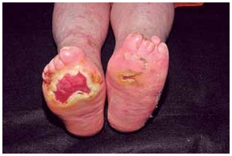
A hanseníase.
B siringomielia.
C sífilis terciária.
D esclerose múltipla.
Questão 3 · Abrasões Corneanas · Of talmologia · Queimaduras Químicas Oculares · 4000170100Homem de 30 anos relata a entrada de pó de cal em um olho há cerca de 30 minutos. Apresenta dor ocular, embaçamento da visão e lacrimejamento. Exame físico: hiperemia conjuntival e dificuldade em manter o olho aberto. A conduta inicial é:
A aplicação de pomada oftálmica epitelizante e prescrição de colírio com corticoide.
B irrigação copiosa do olho com solução salina ou solução de Ringer lactato.
C curativo oclusivo do olho com pomada oftálmica epitelizante.
D uso de colírio lubrificante.
Questão 4 · Rede Cegonha · 4000170099Os serviços de saúde do SUS, nos termos da Lei nº 11.108, de 2005, cam obrigados a permitir a presença, junto às parturientes, de um acompanhante, determinando no texto legal que
A o acompanhamento se dará durante todo o período de trabalho de parto, parto e pós-parto imediato.
B tal disposição é obrigatória na rede própria, sendo facultativa aos serviços conveniados.
C esse acompanhante deverá ser, obrigatoriamente, o cônjuge ou aquele que venha ser indicado pela parturiente como pai da criança.
D a mencionada obrigatoriedade está sujeita à existência de condições ambientais adequadas para sua prática.
Questão 5 · Determinação Social da SaúdeDeterminantes Sociais da Saúde DSS · Lei n 80801990 · 4000170098A saúde tem “como determinantes e condicionantes, entre outros, a alimentação, a moradia, o saneamento básico, o meio ambiente, o trabalho, a renda, a educação, a atividade física, o transporte, o lazer e o acesso aos bens e serviços essenciais”, como refere o texto da
A Lei Orgânica da Saúde (Lei nº 8.080), Brasil, 1990.
B Declaração de Alma Ata sobre Cuidados Primários, OMS, 1978.
C Constituição da República Federativa do Brasil, Brasil, 1988.
D Declaração Universal dos Direitos Humanos, ONU, 1948.
Questão 6 · Princípios e Diretrizes do Sistema Único de Saúde SUS · 4000170097Em relação à territorialização, pode-se afirmar que
A ela representa importante instrumento de organização dos processos de trabalho e das práticas de saúde, posto que as ações de saúde são implementadas sobre uma base territorial sem delimitação.
B a execução das práticas de saúde sobre um substrato territorial já vem sendo utilizada por distintas iniciativas no âmbito do SUS, como na proposta dos municípios/cidades saudáveis e na própria centralização prevista na constituição federal.
C o território apresenta, além de uma delimitação espacial, um perfil histórico, demográfico, epidemiológico, administrativo, tecnológico, político, social e cultural, que o caracteriza como um território em permanente construção.
D a apreensão e a compreensão do território inviabilizam a avaliação dos reais impactos dos serviços sobre os níveis de saúde da população e, consequentemente, o desenvolvimento de práticas de saúde.
Questão 7 · Medicina Preventiva · 4000170096O Sistema de Informação de Saúde do SUS agrega diversos tipos de bases de dados com funções e objetos de registro de diferentes naturezas, como o
A Sinan: Sistema de Informação de Agravos de Notificação.
B SIM: Sistema de Informação sobre Morbidade.
C Sisvan: Sistema de Vigilância de Agravos de Notificação.
D SIH-SUS: Sistema de Informações de Hanseníases do SUS.
Questão 8 · Dermatologia · Diagnóstico · 4000170095Médico em unidade básica de saúde localizada em região onde a leishmaniose tegumentar americana é endêmica atende paciente com 45 dias de evolução de lesão cutânea única, indolor, de formato arredondado, com base eritematosa, in ltrada e de consistência rme, borda bem delimitada e elevada, fundo avermelhado e com granulações grosseiras, localizada no dorso da mão. A abordagem correta é:
A confirmar o diagnóstico com exames parasitológico e/ou imunológico para notificar no Sistema de Informação de Agravos de Notificação.
B iniciar tratamento com isotionato de pentamidina.
C acionar as ações de vigilância de animais silvestres e domésticos no peridomicílio do paciente.
D realizar exame parasitológico com pesquisa de amastigo tas em esfregaço da lesão ou
Questão 9 · Dermatologia · Teste da histamina e da pilocarpina · 4000170094A presença de uma prova de histamina incompleta é altamente sugestiva de hanseníase e ocorre quando na área lesionada não se observa
A o sinal da puntura.
B o eritema reflexo secundário.
C a pápula edematosa lenticular.
D a anidrose.
Questão 10 · Medicina Preventiva · 4000170093A política nacional da atenção básica de 2017 permitiu estabelecer equipes de saúde da família com apenas um agente comunitário de saúde (ACS) e equipes de atenção primária sem ACS. A possibilidade de ausência do ACS afeta um do s pilares do modelo assistencial da estratégia de saúde da família em seu componente comunitário e de promoção da saúde, pautado pela
A concepção da determinação social do processo saúde-doença e da clínica ampliada.
B concepção médico-centrada e pontual de acolhimento e vínculo, relacionada ao combate às doenças.
C ótica de territorialização e vínculo comunitário com famílias e comunidade com prioridade para demanda espontânea.
D lógica do modelo de atenção à saúde de controle de riscos individuais.
Questão 11 · Medicina Preventiva · 4000170092A regra de ouro do atual guia alimentar, de 2014, para a população brasileira é
A utilizar óleos, gorduras, sal e açúcar em pequenas quantidades ao temperar e cozinhar alimentos e criar preparações culinárias.
B fazer de alimentos
C preferir sempre alimentos
D utilizar alimentos ultraprocessados com moderação.
Questão 12 · Saúde ColetivaAtenção Primária à Saúde · Medicina Preventiva · 4000170091Atenção Primária à Saúde APS no Brasil No Brasil, a Atenção Primária à Saúde (APS) é considerada como o centro ordenador das redes de atenção à saúde do Sistema Único de Saúde. Para o fortalecimento da APS, deve(m)-se
A conhecer as especificidades de problemas de saúde de cada território adscrito, organizar ações assistenciais e educativas voltadas à integralidade do cuidado, priorizar a atenção aos problemas de saúde prevalentes e àqueles que acarretam maior risco à saúde, desenvolver ações de educação permanente e estimular o trabalho em equipe e a participação social da comunidade.
B assumir a estratégia de saúde da família como única porta de entrada do sistema de saúde, com um mesmo modelo de atenção em todo território nacional, considerando-se as diferenças locorregionais e a frequência das doenças em cada região a partir do conceito de igualdade, valorizando a assistência médica individual.
C realizar o matriciamento de pacientes atendidos por meio do trabalho e da presença do Núcleo de Apoio a Saúde da Família (NASF), consolidar e qualificar a estratégia de saúde da família nos pequenos e médios municípios, identificando-se a impossibilidade de implantar e qualificar a estratégia de saúde da família nos grandes centros urbanos.
D garantir acesso à população moradora do território adscrito, adequar a infraestrutura necessária ao funcionamento das unidades básicas de saúde, dotando-as de recursos materiais e insumos para que elas executem um conjunto de ações de assistência à saúde de nível primário, secundário e terciário.
Questão 13 · Medicina Preventiva · Estudos de Coorte · 4000170090Um estudo de 2019 teve como objetivo analisar a sobrevida de pessoas com AIDS com idade de 13 anos ou mais, residentes nas regiões Sul e Sudeste do Brasil, diagnosticadas entre 1998 e 1999, com seguimento de dez anos, e sua associação com escolaridade e raça/cor da pele. Nesse estudo, os participantes foram identi cados através do Sistema de Informação de Agravos de Noti cação e os dados referentes às variáveis dependentes e independentes foram obtidos nos prontuários dos pacientes. O delineamento desse estudo foi
A transversal.
B coorte.
C caso controle.
D descritivo.
Questão 14 · Medicina Preventiva · Teorema de Bayes Sensibilidade Especif icidade e Valores Preditivos · 4000170089Sensibilidade Sobre a acurácia dos testes diagnósticos para a covid-19 registrados na Anvisa, a sensibilidade e a especi cidade variaram entre os fabricantes, contudo, em geral, a sensibilidade foi superior a 85%, e a especi cidade foi superior a 94%. Caso dois indivíduos que residam em diferentes cidades, uma com prevalência de covid-19 de 20% e a outra de 33%, realizem testes sorológicos do mesmo fabricante e ambos obtenham resultados positivos, a probabilidade desses indivíduos realmente apresentarem a doença é:
A igual, pois quanto maior a especificidade de um teste, maior será o seu valor preditivo positivo.
B igual, pois o valor preditivo positivo de um teste é uma propriedade exclusiva deste, ou seja, não depende da prevalência da doença.
C diferente, pois quanto maior a prevalência de uma doença, maior é o valor preditivo de um teste.
D diferente, pois quanto maior a sensibilidade de um teste, maior será o seu valor preditivo positivo.
Questão 15 · Medicina Preventiva · Declaração de óbito DO Atestado de óbito · 4000170088Homem de 63 anos, assintomático, estava cumprindo medida de isolamento domiciliar, após diagnóstico confirmado para covid-19. Foi atingido por projétil de arma de fogo (“bala perdida”) que provocou perfuração craniana com perda de massa encefálica e faleceu. Era diabético há 8 anos, controlado. Assinale a alternativa que apresenta o preenchimento correto da declaração de óbito.
A PARTE I a) Ferimento perfurocontuso cranioencefálico b) Projétil de arma de fogo c)______________________ d)______________________
B PARTE I a) Covid-19 b) Ferimento de cabeça por arma de fogo c)________________________ d)________________________
C PARTE I a) Ferimento perfurocontuso cranioencefálico b) Projétil de arma de fogo c) Covid-19 d)_______________________
D PARTE I a) Covid-19 com comorbidade (Diabetes
Questão 16 · Medicina Preventiva · Coef iciente de Natalidade Taxa bruta de natalidade · 4000170087O conceito de nascido vivo refere-se à expulsão ou extração completa do corpo da mãe de um produto de concepção
A com sinal de vida e peso igual ou superior a 500 gramas, ou estatura igual ou superior a 25 centímetros.
B que, depois da separação, respire e apresente dois outros sinais de vida.
C com sinal de vida, desde que o cordão umbilical esteja cortado ou desprendida a placenta.
D com sinal de vida, independentemente da duração da gravidez.
Questão 17 · Documentos médicos · 4000170086O Código de Ética Médica, em seu Capítulo X (Documentos Médicos) estabelece que é vedado ao médico
A atestar óbito quando não tenha prestado assistência ao paciente, salvo, exclusivamente, em caso de verificação médico-legal.
B atestar óbito quando não o tenha verificado pessoalmente.
C atestar óbito de paciente ao qual vinha prestando assistência, com morte domiciliar, sem indícios de morte violenta.
D atestar óbito de nascido vivo que resulte de gestação com duração inferior a 20 semanas.
Questão 18 · Incidência e Prevalência · Medicina Preventiva · Usos da Incidência e da Prevalência em Saúde Pública · 4000170085O gráfico representado na imagem expressa a evolução de casos novos de covid-19 no município de Botucatu e no estado de São Paulo, de abril a dezembro de 2020. A medida de saúde que está expressa no gráfico é

A razão de morbidade média.
B risco relativo médio.
C coeficiente médio de prevalência.
D coeficiente médio de incidência.
Questão 19 · Principais medidas de f requência de doenças · Medicina Preventiva · 4000170084De acordo com o Centro de Vigilância Epidemiológica do Estado de São Paulo, a situação da covid-19, no município de Botucatu e no estado de São Paulo, era a seguinte, nas datas a seguir indicadas. Obs: para ns de cálculos, se necessário, deve-se usar a população IBGE, estimada para 2021: Botucatu = 149.718 habitantes; estado de São Paulo = 46.649.432 habitantes. Para se comparar o risco de ocorrência e o risco de óbito da covid-19 entre as populações de Botucatu e São Paulo, devem-se usar, respectivamente:
A a prevalência instantânea e o coeficiente de letalidade, ambos no final do período.
B o coeficiente de prevalência e o coeficiente de mortalidade.
C o coeficiente de incidência e o coeficiente de mortalidade.
D a taxa de transmissão (ou o número efetivo de reprodução “R”) e o coeficiente de letalidade.
Questão 20 · Medicina Preventiva · Letalidade · 4000170083De acordo com o Centro de Vigilância Epidemiológica do Estado de São Paulo, a situação da covid-19, no município de Botucatu e no estado de São Paulo, era a seguinte, nas datas a seguir indicadas. Obs: para ns de cálculos, se necessário, deve-se usar a população IBGE, estimada para 2021: Botucatu = 149.718 habitantes; estado de São Paulo = 46.649.432 habitantes. O coeficiente de letalidade por covid-19, no município de Botucatu, no ano de 2021 (até 31.08), foi de
A 2,64%.
B 203,7 por 100000 habitantes.
C 195,0 por 100000 habitantes.
D 1,71%.
Questão 21 · Princípios da Anestesiologia · Cirurgia · 4000170082Homem de 65 anos necessita de correção emergencial de fratura exposta e lesão vascular em membro superior esquerdo, com tempo cirúrgico estimado de 4 horas. AP: HAS, DM, obesidade grau II, roncos e sonolência durante o dia, di culdade no manejo de via aérea em cirurgias anteriores. Exame físico: ansioso, PA 140/90 mmHg, edêntulo, com pequena abertura bucal (menor que 3,5 cm) e espaço submandibular firme à palpação. Última refeição há 3 horas. A conduta mais indicada é:
A suspender o procedimento até que o tempo de jejum para sólidos seja de 8 horas.
B realizar indução e intubação sob sequência rápida, evi tando ventilação sob pressão positiva durante etapa de pré-oxigenação.
C proceder com realização da cirurgia sob sedação e infiltração local, para que se evite manipulação das vias aéreas.
D prosseguir com intubação via fibroscopia óptica com paciente acordado e mantendo reflexos protetores de via aérea, antes de indução da anestesia geral.
Questão 23 · Metástases hepáticas · Cirurgia · 4000170080A lesão apresentada nesta imagem é um achado frequente nos exames pós-morte em nosso país. Sua etiopatogenia é:
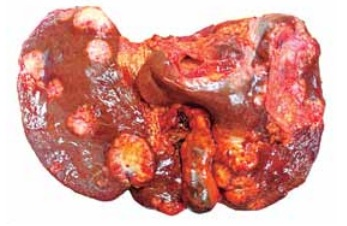
A hipóxica e hepática.
B vascular e cardíaca.
C neoplásica e hematogênica.
D infecciosa e ascendente.
Questão 24 · Osteonecrose da Cabeça do Fêmur · 4000170079Homem de 40 anos apresenta dores espontâneas em ambos os quadris há um ano, com piora progressiva. AP: etilismo desde os 15 anos. RNM da bacia, conforme imagem. O diagnóstico mais provável é:
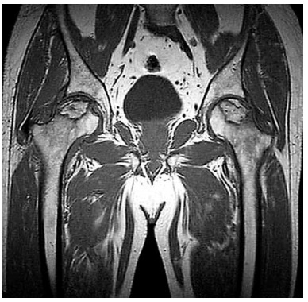
A hematoma encapsulado intraósseo nas cabeças femorais.
B osteocondroma nas cabeças femorais.
C osteonecrose avascular das cabeças femorais.
D osteomielite nas cabeças femorais.
Questão 25 · Hérnias Inguinocrurais · Cirurgia · 4000170078Com base na figura, que corresponde à visão posterior da região inguinal direita, pode-se afirmar que a letra
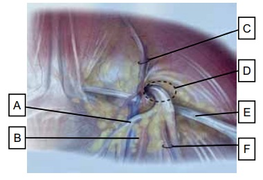
A D corresponde à área do triângulo de Hasselbach.
B E corresponde ao trato iliopúbico.
C C corresponde aos vasos epigástricos superiores.
D B corresponde à artéria ilíaca interna.
Questão 26 · Deiscência Anastomótica · Fístulas Intestinais · Cirurgia · 4000170077Homem de 55 anos submetido à gastrectomia total por adenocarcinoma gástrico, com reconstrução em Y de Roux, vinha apresentando secreção serossanguinolenta desprezível no dreno sentinela do coto duodenal até o 4º PO, quando passou a ser bilioentérica, com débito de 200 mL nas últimas 24 h. Está com SNE locada após a enteroenteroanastomose. Exame físico: taquicárdico. A conduta mais adequada é:
A abordagem cirúrgica imediata.
B dieta parenteral exclusiva.
C passagem de outro dreno guiado por exame de imagem.
D conduta conservadora e dieta enteral.
Questão 27 · Princípios da Cirurgia Oncológica · Cirurgia · 4000170076Com relação aos princípios básicos da cirurgia oncológica, pode-se afirmar que
A na ressecção R1 há doença macroscópica residual.
B a biópsia incisional consiste na remoção completa da lesão e tem papel terapêutico.
C a biópsia por agulha fina permite a obtenção de amostra tecidual satisfatória.
D o critério de operabilidade diz respeito às condições clínicas do paciente.
Questão 28 · Complicações · Cirurgia · 4000170075Homem de 55 anos apresenta desconforto epigástrico e plenitude gástrica. AP: etilista e internação prévia por pancreatite aguda há 2 semanas. TC de abdome: conforme imagem. A conduta correta é:

A observação clínica e seguimento com exame de imagem.
B laparotomia exploradora de urgência.
C drenagem percutânea.
D EDA para possível conduta terapêutica.
Questão 29 · Choque · Cirurgia · 4000170074Homem de 34 anos foi vítima de acidente automobilístico. Exame físico: desacordado, pele fria e pálida, PA 85/40 mmHg, FC 70 bpm, FR 12 irpm, sem fontes de sangramento externo. Pode-se afirmar que a
A causa do choque é decorrente de lesão parassimpática.
B suspeita é de choque neurogênico, por isso a hipotensão permissiva deve ser considerada.
C ausência de reflexo bulbo cavernoso indicaria choque medular.
D succinilcolina é a droga de escolha nesse caso, se houver necessidade de intubação.
Questão 30 · Urologia · Cirurgia · 4000170073Mulher de 43 anos apresenta dor lombar crônica. AP: HAS e DM II. Exames laboratoriais: Hb 14 mg/dL, Cr 1,1 mg/dL, Ur 24 mg/dL, glicemia 220 mg/dL. US, conforme imagem: rim esquerdo em topogra a habitual, 12,1cm em seu maior e ix o , contornos definidos, distinção corticomedular preservada e ecogenicidade cortical preservada, cisto renal hipoecogênico exofítico no terço médio, medindo 1,5 x 1,6 cm; rim direito em topogra a habitual, 11,7cm em seu maior eixo, contornos definidos, distinção corticomedular preservada e ecogenicidade cortical preservada; não há sinais de litíases ou hidronefrose. Assinale a alternativa correta.
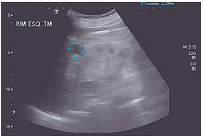
A Trata-se de lesão renal neoplásica, sendo indicada tomografia para classificação de Bosniack.
B Trata-se de um cisto renal simples, não necessitando de exames complementares.
C A lesão é de classificação Bosniack II, devendo ser confirmada por tomografia e reavaliada em 6 meses.
D A lesão tem associação com neoplasia maligna e doença renal crônica.
Questão 31 · Pneumologia · Cirurgia · 4000170072Com relação à fisiologia respiratória aplicada à drenagem de tórax, é correto afirmar que na
A inspiração, o volume da caixa torácica diminui, a pressão na cavidade pleural aumenta e a coluna de líquido no interior do tubo rígido do selo d’água sobe.
B inspiração, o volume da caixa torácica aumenta, a pressão na cavidade pleural diminui e a coluna de líquido no interior do tubo rígido do selo d’água desce.
C expiração, o volume da caixa torácica aumenta, a pressão na cavidade pleural diminui e a coluna de líquido no interior do tubo rígido do selo d’água sobe.
D expiração, o volume da caixa torácica diminui, a pressão na cavidade pleural aumenta e a coluna de líquido no interior do tubo rígido do selo d’água desce.
Questão 32 · Avaliação Inicial · Choque · Cirurgia · 4000170071Homem de 21 anos, vítima de acidente com motocicleta, dirigia sem capacete. Exame físico: múltiplas escoriações e lacerações em crânio, face e tórax, abertura ocular ausente, emissão de sons incompreensíveis e exão dos membros superiores ao estímulo de dor, murmúrio vesicular abolido em hemitórax direito, pulso no, FC 130 bpm, PA 70/40 mmHg. As hipóteses diagnósticas e a conduta inicial são:
A choque hemorrágico, hemotórax e/ou pneumotórax, trauma cranioencefálico grave; garantir via aérea definitiva.
B choque hemorrágico, hemotórax e/ou pneumotórax, trauma cranioencefálico moderado; drenagem torácica à direita.
C choque neurogênico, atelectasia do pulmão direito, trauma cranioencefálico grave; garantir via aérea definitiva.
D choque neurogênico, atelectasia do pulmão direito, trauma cranioencefálico moderado; drenagem torácica à direita.
Questão 33 · Abscesso pulmonar · 4000170070Homem de 45 anos apresenta tosse com expectoração, astenia e febre há 10 dias. Refere que no início a secreção e ra amarelada, mas há 3 dias se tornou purulenta. AP: etilista e tabagista. Exames laboratoriais: leucocitose e PCR elevada. TC de tórax, conforme imagem. A conduta correta é:
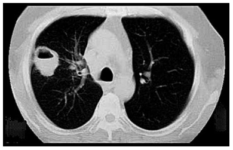
A drenagem torácica.
B antibioticoterapia e fisioterapia respiratória.
C videotoracoscopia para ressecção da lesão.
D toracocentese diagnóstica.
Questão 34 · Atendimento Inicial às Vítimas de Queimadura · Cirurgia · 4000170069Homem de 26 anos apresenta queimaduras produzidas pela explosão de um vasilhame com álcool combustível, há 1 hora. Exame físico: consciente, orientado, respirando normalmente, sem rouquidão ou escarro com fuligem, bolhas rotas na face, na parte anterior do tronco e MMSS. As superfícies queimadas são avermelhadas, com áreas esbranquiçadas e outras vermelho vivo. Estimativa da área queimada: 25%. A conduta nesse momento é realizar
A atendimento inicial ao traumatizado, infusão de líquidos por via endovenosa, avaliação da profundidade da área queimada e passagem de sonda vesical de demora.
B infusão de Ringer lactato, com volume calculado pela fórmula de Parkland, sendo a metade do volume calculado infundido em 8 horas.
C intubação precoce por suspeita de queimadura de via aérea, cálculo do volume a ser infundido pela fórmula de Parkland e passagem de sonda vesical de demora.
D infusão de Ringer lactato, com volume calculado pela fórmula de Parkland, antibioticoterapia de largo espectro e internação em unidade de queimados.
Questão 35 · Fases da Cicatrização · Cirurgia · 4000170068Sobre o processo de cicatrização tecidual, é correto afirmar que
A quanto mais derme presente, maior será a contração secundária.
B na fase inflamatória, a resposta celular é inicialmente de linfócitos.
C na fase proliferativa, a perda da inibição por contato impede a epitelização.
D na fase de maturação, há substituição do colágeno tipo III pelo tipo I.
Questão 36 · Anticoagulantes antagonistas da vitamina K · 4000170067Assinale a alternativa que apresenta a razão para a utilização de anticoagulante injetável concomitante ao início da terapia por varfarina na anticoagulação.
A A varfarina bloqueia a ativação de fatores da cascata de coagulação e a produção dos inibidores de coagulação (proteína C e S) dependentes da vitamina K.
B Não se pode confiar na absorção oral da varfarina, sendo esse o motivo pelo qual há tanta variabilidade no resultado do tempo de protrombina.
C O uso de anticoagulantes parenterais traz benefício na terapêutica intra-hospitalar pela sua fácil via de administração.
D A varfarina é uma pró-droga que chega inativada ao fígado, pelo contato com as proteínas C e S, sendo somente ativada após o efeito de primeira passagem pela enzima P450.
Questão 37 · Oclusão Arterial Aguda OAA · Cirurgia · 4000170066O local mais frequente de acometimento periférico nas oclusões arteriais agudas de etiologia embólica é a
A bifurcação aórtica.
B bifurcação ilíaca.
C bifurcação femoral.
D artéria poplítea.
Questão 38 · Prof ilaxia Secundária · Investigação Etiológica · 4000170065Mulher de 30 anos apresentou acidente vascular encefálico (AVE) há um mês. AP: sem comorbidades. Exame físico: s e m dé cits neurológicos. Exames: tomogra a cervical, tomogra a encefálica e holter: normais, ecocardiograma transesofágico: persistência de forame oval pérvio com diâmetro de 0,5 x 0,7 cm. A conduta mais adequada para a prevenção de recorrência de AVE é:
A antiagregação plaquetária.
B anticoagulação.
C fechamento do forame oval.
D seguimento ambulatorial.
Questão 39 · Apendicite Aguda · Apendicite Aguda · Cirurgia · 4000170064Menina de 3 anos tem dor abdominal há 3 dias, mais localizada em andar inferior. Há 2 dias apresenta episódios de vômitos esverdeados, inapetência e picos febris (38,5 ºC). Há 1 dia apresenta episódios de diarreia líquida. Exame físico: REG, desidratada 2+/4, irritada. Abdome: RHA diminuídos, dor difusa à palpação profunda, com reação peritoneal em hipogástrio. Hemograma: 14.000 glóbulos brancos, sem desvio. Raio-X de abdome, conforme a imagem. O diagnóstico e a conduta são:
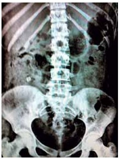
A gastroenterocolite aguda; hidratação e coleta de coprograma e coprocultura.
B apendicite aguda; apendicectomia.
C pielonefrite aguda; TC de rins e vias urinárias.
D abdome agudo obstrutivo por ingestão de corpo estranho; laparotomia exploradora.
Questão 40 · Persistência do Conduto Peritôniovaginal Patente · Cirurgia · 4000170063Menino de 4 meses apresenta choro intenso há 2 horas. Mãe relata última mamada há 30 minutos. Nega vômitos e febre e refere que a última evacuação ocorreu há 3 horas. Exame físico: BEG, ativo, bastante irritado e choroso. Abdome: normotenso, RHA presentes, sem sinais de reação peritoneal. Presença de abaulamento xo em FID (conforme a imagem). Testículos tópicos bilateralmente. O diagnóstico é hérnia inguinal direita

A estrangulada, necessitando de herniorrafia imediatamente.
B encarcerada, e deve-se realizar tentativa de redução manual.
C devendo-se agendar consulta ambulatorial com especialista.
D encarcerada, e deve-se realizar herniorrafia imediatamente.
Questão 41 · Fobia Social ou Transtorno de Ansiedade Social · Transtornos Ansiosos · 4000170062Mulher de 21 anos refere que está muito preocupada e com medo de não conseguir concluir seu curso universitário, pois tem apresentado sintomas de ansiedade intensa sempre que deve realizar uma apresentação oral, temendo ser reprovada novamente. Esse quadro inicia-se com rubor, taquicardia, sudorese, dor abdominal, náuseas e sensação de sufocamento. Considera-se uma pessoa retraída e, sempre que possível, prefere fazer tudo sozinha e assim evitar o julgamento dos outros. A hipótese diagnóstica é:
A transtorno de pânico.
B fobia específica.
C transtorno de ansiedade generalizada.
D transtorno de ansiedade social.
Questão 42 · Tratamento · Dermatologia · Manif estações clínicas · 4000170061Homem de 35 anos, proprietário rural, apresenta lesão na face lateral da perna direita há 5 meses, que se iniciou como “pelo encravado” com evolução progressiva (imagem). Nega outras lesões cutâneas ou sintomas sistêmicos. Exame histopatológico da lesão: reação granulomatosa em arranjo tuberculoide constituída por macrófagos, células epitelioides e células gigantes, com presença de estruturas arredondadas dentro dos macrófagos, além de in ltrado histiolinfoplasmocitário. Exame parasitológico direto da lesão: negativo. O diagnóstico e tratamento são, respectivamente,

A hanseníase dimorfa; rifampicina associada à clofazimina.
B leishmaniose tegumentar; antimoniato de N-metilglucamina.
C leishmaniose tegumentar; cetoconazol.
D hanseníase tuberculoide; rifampicina associada à dapsona.
Questão 43 · Neurologia · Estado de Mal Epiléptico · 4000170060Homem de 65 anos apresenta movimentos involuntários no braço direito e face que se iniciaram há 2 horas e permaneceram de forma ininterrupta até o momento. AP: HAS, DM e DLP. Exame físico: REG, desidratado, PA 130/90 mmH g , HGT 560 mg/dL, movimentos estereotipados clônicos em membro superior direito e automatismos oromastigatórios. O diagnóstico e a conduta sequencial, além da monitorização, são:
A estado de mal epiléptico; midazolam EV, seguido de fenitoína EV com velocidade de infusão de 50 mg/min, se necessário, e corrigir glicemia.
B crises convulsivas; diazepam EV, fenobarbital EV, se necessário, e corrigir glicemia.
C estado de mal epiléptico; corrigir glicemia, fenitoína EV com velocidade de infusão de 50 mg/min.
D crises convulsivas; midazolam EV, fenitoína EV com velocidade de infusão de 75 mg/min, se necessário, e corrigir glicemia.
Questão 44 · Síndrome do Manguito Rotador · 4000170059Mulher de 56 anos há 9 meses apresenta dor na região anterolateral dos ombros com piora ao abduzir e elevar os braços e limitação para carregar pesos. Nega trauma associado, parestesias ou paresia dos membros. AP: diabética, hipertensa, dislipidêmica em uso irregular de losartana 100 mg/dia, metformina 1000 mg/dia e sinvastatina 40 mg/dia. Exame físico: dor à manobra do arco doloroso com abdução dos braços a 80º, teste de Neer, Hawkins e Jobe positivos bilateralmente. O diagnóstico e a conduta são:
A polineuropatia periférica diabética; eletroneuromiografia, antidepressivos tricíclicos e anticonvulsivantes.
B cervicobraquialgia; TC de coluna cervical e eletroneuromiografia, AINE e fisioterapia.
C miopatia necrosante imunomediada induzida por estatina; dosar CPK e anticorpos, eletroneuromiografia, biópsia muscular, altas doses de prednisona.
D doença do manguito rotador; fisioterapia, AINE, orientação para não realizar movimentos acima do nível dos ombros e evitar sobrecarga.
Questão 45 · Tratamento de manutenção da asma · Pneumologia · 4000170058Mulher de 27 anos apresenta tosse e chiado no peito desde os 6 anos de idade. Atualmente, os sintomas ocorrem até 2 vezes no mês. Nega despertar noturno ou limitações de atividades e não usa medicações de resgate. A conduta medicamentosa indicada é:
A salbutamol 100 mcg, 2 puffs inalatório de resgate.
B salmeterol 50 mcg/fluticasona 250 mcg inalatório de resgate.
C formoterol 6mcg/budesonida 200 mcg de 12/12 h de manutenção.
D formoterol 6 mcg/budesonida 200 mcg inalatório de resgate.
Questão 46 · Fatores de Risco · Neurologia · Quadro Clínico · 4000170057Homem de 62 anos apresenta cansaço intenso diário e episódios de esquecimentos há 5 anos. AP: doença do re uxo gastroesofágico (DRGE), HAS e consumo de duas doses de cerveja/dia. Nega tabagismo. Faz uso contínuo de omeprazol, hidroclorotiazida, losartana e propranolol. Exame físico: altura 1,60 m; peso 98 kg; circunferência cervical 41 cm; P A 180/90 mmHg; FC 89 bpm; FR 18 ipm. Hipoplasia mandibular; 2 bulhas rítmicas hipofonéticas; pulmonar: murmúrio vesicular presente, sem ruídos adventícios; abdome globoso. Dentre os exames complementares relacionados, o mais adequado a ser solicitado nesse momento é:
A espirometria pré e pós-broncodilatador.
B tomografia computadorizada de tórax.
C polissonografia.
D ressonância magnética de tórax.
Questão 47 · Síndrome de Lise Tumoral SLT · Síndrome de lise tumoral SLT · 4000170056Homem de 25 anos apresenta náuseas, vômitos, discreta sonolência e fraqueza muscular. AP: diagnóstico recente de carcinoma de células germinativas do testículo esquerdo, com grande massa tumoral retroperitoneal, em quimioterapia com etoposídeo e cisplatina há 4 dias. Exame físico: PA 110/70 mmHg, FC 100 bpm, temperatura 37,8 ºC, orientado, sem outras alterações. A conduta inicial e sua justificativa são:
A antibioticoterapia empírica de amplo espectro, considerando alta possibilidade de neutropenia pós-quimioterapia.
B antieméticos via oral, considerando que se trata de toxicidade gastrintestinal relacionada à quimioterapia.
C encaminhamento à UTI devido ao risco de instabilidade hemodinâmica, considerando alta possibilidade de perfuração neoplásica abdominal.
D hidratação endovenosa e coleta de hemograma, função renal, cálcio, potássio, ácido úrico e fosfato, pela possibilidade de síndrome de lise tumoral.
Questão 48 · Hipertensão Arterial Sistêmica HAS · 4000170055Mulher de 56 anos com HAS há 20 anos sem outras comorbidades. Inicialmente obteve bom controle pressórico, entretanto, há 5 anos passou a ter elevação da pressão arterial sempre > 140/90 mmHg, em medidas residenciais com aparelho automático bem calibrado. Em uso regular e correto de hidroclorotiazida 25 mg/dia, enalapril 40 mg/dia, amlodipina 10 mg/dia e atenolol 100 mg/dia. Trata-se de hipertensão
A resistente devido à hipertensão essencial, sem necessidade de investigação de causas secundárias.
B resistente, com necessidade de ampliar investigação para causas secundárias.
C refratária devido à hipertensão essencial, sem necessidade de investigação de causas secundárias.
D refratária, e a causa mais provável é hipertensão renovascular.
Questão 49 · Quadro clínico da anemia megaloblástica · 4000170054Considere os seguintes valores normais para esta questão. Homem de 68 anos, branco, lavrador, ex-tabagista (43 anos/maço), queixa-se de fraqueza há 5 semanas, mais intensa há 15 dias. Exame físico: FC 94 bpm, PA 110/70 mmHg, palidez 3+/4, icterícia conjuntival 1+/4, sopro holossistólico 1+ (suave), varizes sublinguais 3+/4, gengivite tartárica inferior, fígado palpável a 1 cm do rebordo costal na linha hemiclavicular direita, baço percutível. Exames laboratoriais: DHL 1389 U/mL, haptoglobina zero, BT 3,8 mg/dL (direta 0,5, indireta 2,3); glóbulos vermelhos 2.680.000/mm³, Hb 10,3 g/dL, Ht 33,2 %, VCM 124 fL, HCM 42, 2 pg, CHCM 34,1 g/dL, RDW 16,8%, plaquetas 82.000/mm³, leucócitos 6.050/mm³ (neutro 4.230/mm³, linfo 1.490/mm³, mono 270/mm³, eosi 60/mm³, baso 10/mm³). O diagnóstico é anemia macrocítica
A por hemólise com consumo de plaquetas.
B e plaquetopenia por megaloblastose.
C com consumo de plaquetas por hemólise microangiopática.
D e plaquetopenia por síndrome mielodisplásica.
Questão 50 · Neutropenia f ebril · 4000170053Homem de 61 anos apresenta febre de 39,0 °C. AP: linfoma de alto grau, no D14 da quimioterapia de alta intensidade. Exame físico: PA 120/70 mmHg; FC 112 bpm; FR 20 ipm; SatO₂ 98%; desidratado +/4+; hiperemia intensa e aumento de temperatura na região do portocath. Considerando a principal hipótese diagnóstica, a conduta correta é:
A aguardar resultado de hemograma antes de iniciar o tratamento.
B indicar tratamento ambulatorial após a sua confirmação.
C indicar antibioticoterapia sem cobertura para bactérias Gram positivo.
D iniciar antibioticoterapia de amplo espectro, antes da confirmação diagnóstica.
Questão 51 · Saúde do Idoso geriatria · 4000170052Em relação ao
A os antipsicóticos representam a principal abordagem farmacológica para o tratamento de pacientes portadores de
B de acordo com o
C as medidas de prevenção incluem estimular a mobilidade e a ingestão hídrica, orientá-los no tempo e no espaço e otimizar o sono à noite com medidas não farmacológicas.
D está indicada a realização de um exame de neuroimagem, como tomografia computadorizada ou ressonância magnética.
Questão 52 · Diarreia Crônica · Cirurgia · 4000170051Mulher de 55 anos apresenta diarreia há 2 meses, acompanhada de dor abdominal e perda de peso (< 10% do peso corpóreo). HI: 6 evacuações ao dia, fezes amolecidas a líquidas, sem muco ou sangue. AP: HAS e DM controlados com uso regular de enalapril e metformina. A conduta correta é:
A realizar investigação com colonoscopia para descartar neoplasia de cólon.
B suspender o uso das medicações pela suspeita de diarreia medicamentosa.
C investigar doença celíaca com endoscopia digestiva alta e biópsia de duodeno.
D iniciar tratamento com amitriptilina pela suspeita de síndrome do intestino irritável.
Questão 53 · Manometria Esof ágica · pHmetria de 24 horas e Impedância · Endoscopia Digestiva Alta EDA · 4000170050É considerada evidência conclusiva para doença do refluxo gastroesofágico:
A endoscopia digestiva alta com esofagite erosiva grau C de Los Angeles.
B pH-metria de 24 horas com tempo de exposição ácida de 3%.
C pH-metria com impedanciometria, registrando 35 episódios de refluxo em 24 horas.
D manometria de esôfago com hipotonia do esfíncter inferior do esôfago.
Questão 54 · Insulinoterapia no tratamento do diabetes mellitus tipo 2 · 4000170049Homem de 39 anos é diabético e faz uso de insulina NPH 20 UI pela manhã e 10 UI à noite ( laboratoriais: glicemia de jejum 157 mg/dL; HbA1c 7,3%. Mapa de glicemia capilar (quadro): Considerando as metas preconizadas pela Sociedade Brasileira de Diabetes, a conduta é
A aumentar a NPH da manhã e da noite.
B aumentar a NPH da noite.
C adicionar insulina regular antes do jantar.
D trocar insulina NPH por insulina glargina.
Questão 55 · Tireoidite granulomatosa subaguda TGSA · 4000170048Mulher de 38 anos apresenta astenia, mal-estar, artralgia, mialgia, faringite, febre e dor intensa na região cervical, principalmente à direita com irradiação para mandíbula e ouvido direito há 10 dias. Há 4 dias queixa-se de palpitações, tremor e sudorese. Exame físico: bócio nodular de consistência rme, doloroso. Exames laboratoriais: TSH 0,002 mUI/mL (VR 0,4 – 4,0); T4 livre 2,5 ng/dL (VR 0,8 – 1,9); tireoglobulina 75 ng/mL (VR <10); PCR: 12 mg/L (VR <3); VHS 68 mm/h (VR < 20 mm/h). Cintilografia de tireoide: captação do iodo radioativo nas 24 horas < 1% (VR 15 – 45%). É correto afirmar que essa condição
A é uma doença inflamatória crônica da tireoide que evolui para hipotireoidismo.
B geralmente segue um curso de quatro fases: tireotoxicose, eutireoidismo, hipotireoidismo e eutireoidismo.
C se trata da doença de Graves, e o tratamento com antitireoideanos é necessário.
D indica a necessidade de punção aspirativa (PAAF) devido à presença do nódulo.
Questão 56 · Inf ectologia · Pneumologia · 4000170047Homem de 50 anos apresenta dispneia, tosse, expectoração amarelada e febre de 38 ºC há 5 dias. AP: HAS. Exame físico: PA 60/40 mmHg, FC 110 bpm, FR 35 ipm e SatO₂ 85%. Além da suplementação de oxigênio, na primeira hora devem-se:
A coletar hemoculturas e lactato sérico, administrar antibioticoterapia, fazer 30 mL/kg de cristaloide e entrar com noradrenalina se necessário.
B coletar hemoculturas, lactato sérico e saturação venosa central, fazer 30 mL/kg de cristaloide, antibioticoterapia, dobutamina se saturação venosa central < 70%.
C coletar culturas, iniciar antibioticoterapia de amplo espectro, prescrever noradrenalina para manter pressão arterial média > 65 mmHg.
D coletar culturas, fazer 30 mL/kg de solução cristaloide, iniciar antibioticoterapia de largo espectro, prescrever dobutamina se saturação venosa central < 70%.
Questão 57 · Sarcoidose · Sarcoidose · Pneumologia · 4000170046Mulher de 37 anos apresenta dispneia progressiva, tosse seca, calafrios, febre baixa diária há 6 meses, evoluiu c o m desorientação, fraqueza muscular e apatia. Exame físico: PA 100/60 mmHg, FC 105 bpm, SatO₂ 94%, desidratada 3+/4+; hiperemia, aumento de temperatura e dor em 2ª e 3ª articulações interfalangianas proximais da mão direita; lesões hiperpigmentadas nos membros (imagem 1). Exames laboratoriais: escarro negativo para BAAR; sorologias para HIV, histoplasmose, paracoccidioidomicose e apergilose negativas; hemograma normal, PCR 7 mg/dL, Na 135 mEq/L, K 4.5 mEq/L, Cr 2.0 mg/dL, Ur 102 mg/dL, cálcio corrigido 11.8 mg/dL, 1,25 (OH)2 vitD3 = 200 pg/mL. Radiogra a de tórax (imagem 2). A principal hipótese diagnóstica, mecanismo fisiopatológico e manejo inicial são, respectivamente,
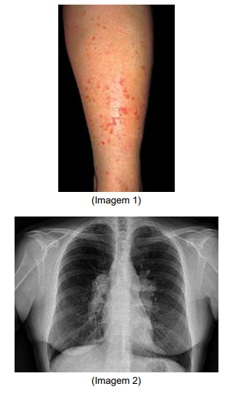
A neoplasia pulmonar; hipercalcemia relacionada com secreção ectópica de PTH; pamidronato 60 – 90 mg IV e furosemida IV.
B neoplasia pulmonar; hipercalcemia por produção de proteína PTH-like; hidratação IV vigorosa.
C sarcoidose; hipercalcemia por aumento da expressão de 1
D sarcoidose; hipercalcemia por secreção ectópica de PTH pelos granulomas; hidratação vigorosa, pamidronato 60 – 90 mg IV e furosemida IV.
Questão 58 · Diagnostico · Pneumologia · 4000170045Mulher de 79 anos apresenta tosse seca e dispneia súbita. AP: adenocarcinoma de mama em vigência de quimioterapia. Exame físico: FC 118 bpm, SatO₂ 89% em ar ambiente. Iniciada anticoagulação com enoxaparina. Angiotomografia de tórax: negativa para trombos. A melhor conduta é:
A suspender anticoagulação e realizar cintilografia de ventilação-perfusão miocárdica.
B manter anticoagulação e realizar ultrassom doppler de membros inferiores.
C suspender anticoagulação e realizar ultrassom doppler de membros inferiores.
D manter anticoagulação e não prosseguir a investigação.
Questão 59 · Tratamento f armacológico da insuf iciência cardíaca com f ração de ejeção reduzida · 4000170044Mulher de 35 anos em seguimento ambulatorial por miocardiopatia periparto com fração de ejeção do ventrículo esquerdo (FEVE) de 32%. Faz uso de dose máxima possível de losartana, carvedilol, espironolactona e furosemida. Apesar disso, a paciente continua com sintomas limitantes (dispneia aos pequenos esforços e edema moderado nas pernas). Exame físico: PA 115/80 mmHg; FC 70 bpm. Exames bioquímicos normais. Assinale a alternativa que apresenta o melhor esquema terapêutico.
A Substituir losartana por enalapril.
B Acrescentar ivabradina.
C Substituir losartana por valsartana-sacubitril.
D Acrescentar digoxina.
Questão 60 · Cardiologia · Terapia antitrombótica · 4000170043Homem de 65 anos, com IAM sem supra de ST, foi submetido à angioplastia de artéria coronária descendente anterior c o m significativas. A melhor estratégia de tratamento com antiagregante plaquetário é doses de ataque de AAS 200 mg
A e clopidogrel 300 mg, seguido por AAS 100 mg/dia e clopidogrel 75 mg/dia por 12 meses após o evento agudo.
B e ticagrelor 180 mg, seguido por AAS 100 mg/dia e ticagrelor 180 mg/dia por 12 meses após o evento agudo.
C e prasugrel 60 mg, seguido por AAS 100 mg/dia e prasugrel 10 mg/dia por 12 meses após o evento agudo.
D e prasugrel 60 mg, seguido por AAS 100 mg 1x ao dia e prasugrel 20 mg/dia por 6 meses após o evento agudo.
Questão 61 · Covid na gestação · Obstetrícia · 4000170042Os riscos da covid-19 em gestantes
A em geral, não são reduzidos pela vacinação baseada em vacinas de RNA.
B inclui o desenvolvimento de malformações fetais envolvendo sistema nervoso central entre o maior deles.
C apresentam-se aumentados para internações, inclusive em Unidades de Terapia Intensiva, quando comparadas a mulheres não gestantes.
D inclui descolamento precoce de placenta em cerca de 20% das gestantes com a doença, devido à grande carga viral placentária.
Questão 62 · Papilomavírus humano HPV · 4000170041Mulher de 58 anos apresenta lesões assintomáticas na vulva há seis meses, conforme a imagem. Antecedente pessoal: HAS e portadora do HIV, com carga viral indetectável e CD4+ 300 células/mm³, em uso regular de TARV e captopril. Refere prática sexual sem preservativo no último ano, porém, sem parceiro fixo. De acordo com seu diagnóstico, pode-se afirmar que as lesões vulvares

A podem ser tratadas ambulatorialmente com ácido tricloroacético 90%.
B são causadas por HPV de alto risco oncogênico.
C são devido à sífilis maligna precoce no HIV, devendo ser tratadas com penicilina benzatina, 2400000 UI, intramuscular, dose única.
D são de molusco contagioso em paciente imunossuprimido e devem ser tratadas com curetagem.
Questão 63 · Clamídia · Ginecologia · 4000170040Mulher de 30 anos, assintomática, retorna para buscar resultado do exame citopatológico do colo do útero, cujo resultado é “sugestivo de
A A infecção por clamidia está incluída como um resultado no Sistema de Bethesda.
B O tratamento pode ser instituído, independentemente dos sintomas.
C O papanicolaou é capaz de detectar infecção por clamídia somente em pacientes sintomáticas.
D O diagnóstico de infecção por clamídia depende de teste molecular.
Questão 64 · Ginecologia · Doença trof oblástica gestacional · 4000170039Mulher de 22 anos apresenta aumento progressivo do volume abdominal associado à dor em peso no baixo ventre e irregularidade nmenstrual há 04 meses. AP: G0P0. Exame físico: IMC 28 Kg/m², massa endurecida palpável em baixo ventre 2 cm acima da cicatriz umbilical com mobilidade reduzida. US pélvica: massa expansiva heterogênea solidocística em região anexial direita, com fluxo anárquico ao color doppler e moderada quantidade de líquido livre na cavidade. A hipótese diagnóstica e os marcadores necessários para avaliação são:
A tumor maligno de células germinativas;
B tumor maligno epitelial; DHL e CEA.
C teratoma ovariano maduro; 17-
D Struma ovarii;
Questão 65 · Câncer de colo do útero · 4000170038Mulher de 46 anos apresenta sangramento vaginal em grande quantidade há 3 dias. Relata irregularidade menstrual com presença de sangramento intermenstruo recorrente, de moderada quantidade, há 2 anos, além de sinusorragia e secreção vaginal de forte odor de longa data. AP: G5P3A2C2. Exame especular: moderada quantidade de sangramento vaginal, lesão exofítica friável com aproximadamente 2 cm de diâmetro. Toque vaginal: lesão nodular endurecida, con nada a cérvix uterina, útero e anexos de difícil delimitação, fundos de saco vaginais livres. Toque retal: paramétrios livres. Exames laboratoriais: Hb 6,8 g/dL, Ht 27%, ureia 32 mg/dL, creatinina 0,8 mg/dL. A conduta correta é:
A citologia oncótica cervical, conização e radioterapia.
B citologia oncótica cervical, colposcopia e abordagem cirúrgica.
C colposcopia, biópsia da lesão, radioterapia e quimioterapia.
D biópsia da lesão, tomografia computadorizada e abordagem cirúrgica.
Questão 66 · Ginecologia · Tratamento · 4000170037Em relação à doença inflamatória pélvica (DIP), assinale a alternativa correta.
A Pacientes com imagem ultrassonográfica sugestiva de abscesso tubo ovariano podem receber tratamento ambulatorial se estiverem em regular estado geral e mostrarem-se aderentes ao tratamento.
B A síndrome de Fitz Hugs Curtis é uma complicação aguda da DIP, com grave envolvimento hepático, alteração de função do órgão e prognóstico sombrio.
C O(s) parceiro(s) sexual(ais) deve(m) ser tratado(s), mesmo que assintomático(s), com dose única de ceftriaxona 500 mg por via intramuscular e de azitromicina 1 g por via oral.
D Em esquema de tratamento hospitalar, a doxiciclina deve ser usada preferencialmente por via intravenosa, mantendo-se sua prescrição até 72 horas da melhora clínica.
Questão 67 · Tratamento · 4000170036Mulher de 35 anos apresenta lesão intraepitelial de alto grau em citologia oncótica de colo uterino (HSIL). Colposcopia: zona de transformação tipo 1 com áreas de epitélio branco espesso e mosaico grosseiro, restritas ao colo, sem sinais de invasão ou doença glandular. A conduta correta é:
A repetir a citologia oncótica, direcionando a coleta de amostras das áreas alteradas, sob colposcopia.
B propor o “ver e tratar” e realizar exérese da zona de transformação do tipo 1.
C solicitar a genotipagem de HPV e agendar retorno breve.
D solicitar a revisão da lâmina e propor rastreamento para cervicites.
Questão 68 · Def iciência esf incteriana intrínseca · Ginecologia · 4000170035Na incontinência urinária de esforço, a perda de urina aos pequenos esforços sugere:
A litíase vesical.
B lesão neurológica periférica.
C hiperatividade do detrusor
D deficiência esfincteriana intrínseca.
Questão 69 · Tricomoníase · Ginecologia · 4000170034Mulher de 32 anos apresenta corrimento vaginal e mau odor genital há 6 dias, após relação sexual desprotegida com parceiro eventual. Nega atraso menstrual e refere uso de contraceptivo injetável trimestral há 3 anos. Exames ginecológico e microscópico, conforme as imagens, com teste de aminas positivo e pH 5,8. A hipótese diagnóstica e a conduta mais adequada são:
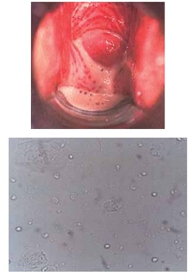
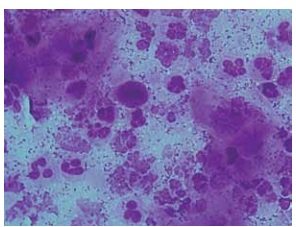
A tricomoníase vaginal; metronidazol 250 mg 2 cps VO 12/12h por 7 dias.
B vaginite aeróbia; clindamicina creme vaginal a 2% por 14 dias.
C candidíase vaginal; itraconazol 100 mg 2 cps VO 12/12h por 1 dia.
D vaginose citolítica; óvulos vaginais de borato de sódio a 2% por 10 dias.
Questão 70 · Ginecologia · Ciclo menstrual · 4000170033Em relação à dinâmica do folículo ovariano no ciclo menstrual, é correto afirmar que
A as células da teca fazem parte dos folículos primordiais, assim como as células da granulosa.
B a atresia folicular é interrompida quando a mulher faz uso de contraceptivo hormonal combinado.
C as principais fases de maturação folicular são recrutamento, seleção e dominância.
D após a ovulação, o ovócito secundário termina a primeira divisão meiótica.
Questão 71 · Câncer de mama · 4000170032Mulher de 44 anos apresentou em mamogra a de rastreamento imagem nodular irregular de 1,5 cm na mama esquerda (BIRADS 5). DUM há 15 dias. Biópsia percutânea: carcinoma invasivo sem outras especi cações, grau histológico 3 (imuno-histoquímica: receptor de estrogênio 60%, receptor de progesterona 30%, HER2 escore 0, Ki-67 30%). Estadiamento T1N0. Assinale a alternativa correta.
A Exames de imagem com achados BIRADS 5 apresentam risco de malignidade entre 50 e 95%.
B Para essa paciente, o tratamento adjuvante com tamoxifeno é mais adequado do que inibidores da aromatase.
C Por ser um tumor luminal B, a paciente tem indicação do uso de trastuzumabe.
D Caso essa paciente seja submetida à cirurgia conservadora, a margem ideal é de 1 cm para que não precise de radioterapia adjuvante.
Questão 72 · Ginecologia · Síndrome de Rokitansky · 4000170031Adolescente de 17 anos queixa-se de nunca haver menstruado. Exame físico: estatura 1,69 m, mamas e pelos pubianos em estágio 5 de Marshall e Tanner. Cariótipo: 46 XX. O diagnóstico mais provável é:
A agenesia Mülleriana.
B síndrome de Morris.
C disgenesia gonadal pura XX.
D síndrome de Swyer.
Questão 73 · Estática f etal · 4000170030Secundigesta com 39 semanas, em trabalho de parto, está com colo uterino esvaecido e dilatado 10 cm, apresentação cefálica etida, numa variedade esquerda anterior e no plano + 2 de De Lee. O ponto de referência fetal e o quanto ele deve rodar para que se dê o desprendimento da cabeça são:
A bregma; 135º no sentido anti-horário.
B bregma; 45º no sentido horário.
C occipício; 315º no sentido horário.
D occipício; 45º no sentido anti-horário.
Questão 74 · Restrição de crescimento f etal RCF · Obstetrícia · 4000170029Primigesta de 19 anos com idade gestacional de 31 semanas apresenta altura uterina abaixo do percentil 10. US: morfologia fetal normal, peso estimado no percentil 3 para a idade gestacional e resistência aumentada ao doppler das artérias umbilicais. O provável diagnóstico é:
A feto pequeno constitucional.
B restrição de crescimento fetal tardia.
C restrição de crescimento fetal precoce.
D datação incorreta.
Questão 75 · Obstetrícia · Eclâmpsia · 4000170028Primigesta de 34 semanas refere inchaço nas pernas e mãos há uma semana. Hoje apresenta dor de cabeça que não melhora com o uso de analgésico, dor em região epigástrica e visão embaçada. PA 140/90 mmHg, confirmada após 30 minutos. Urina I ausência de proteinúria. A hipótese diagnóstica e a conduta são:
A crise hipertensiva; hipotensor de ação rápida.
B pré-eclampsia grave; sulfato de magnésio.
C hipertensão gestacional; hidroclorotiazida.
D pré-eclâmpsia leve; hipotensor de ação rápida.
Questão 76 · Trabalho de parto prematuro TPP · Obstetrícia · 4000170027Secundigesta, na 20ª semana, está em uso de progesterona natural (200 mcg/dia, via vaginal) desde a 16ª semana d e gestação. AP: parto prematuro espontâneo com 30 semanas na primeira gestação. US colo uterino de 35 mm. As condutas são:
A manter a progesterona e fazer ultrassom seriado.
B suspender a progesterona e realizar cerclagem.
C manter a progesterona e realizar cerclagem.
D suspender progesterona e realizar ultrassom seriado.
Questão 77 · Sangramento segunda metade da gestação · Obstetrícia · 4000170026Gestante de 27 semanas, com 3 cesáreas anteriores, apresenta sangramento vaginal discreto e indolor. Exame físico: BEG, eupneica, hidratada, PA: 115/75 mmHg, FC materna 80 bpm, AU no percentil 50, ausência de dinâmica uterina em 10 minutos, tônus uterino normal, BCF 146 bpm. Exame especular: discreta quantidade de sangue vermelho vivo coletado em fundo de saco, colo puntiforme, ausência de lesões vaginais e cervicais. A hipótese diagnóstica é:
A descolamento prematuro de placenta.
B trabalho de parto prematuro.
C insuficiência istmocervical.
D placenta prévia.
Questão 78 · Medicamentoso · Indicação de parto · 4000170025Tercigesta de 36 anos, com 34 semanas de gestação, tem diagnóstico de diabetes gestacional (GTT 75 g alterado) e está sendo tratada com dieta para diabéticos (1800 Kcal/dia) e caminhada (150 minutos/semana). Exame físico: IMC: 37 kg/m², PA: 130/80 mmHg, altura uterina > percentil 90. Ultrassom obstétrico: peso fetal no percentil 80, índice de líquido amniótico > percentil 90. Controle glicêmico (HGT): jejum (92 mg/dL), 2 horas pós-café (121 mg/dL), 2 horas pós-almoço (144 mg/dL) e 2 horas pós-jantar (132 mg/dL). As condutas são:
A manter controle glicêmico com dieta e programar resolução da gestação a partir da 38ª semana.
B prescrever metformina e programar resolução da gestação a partir da 39ª semana.
C prescrever insulina e programar resolução da gestação a partir da 37ª semana.
D prescrever metformina e programar resolução da gestação a partir da 37ª semana.
Questão 79 · Líquido Amniótico · Controle glicêmico · Crescimento f etal · 4000170024Tercigesta de 36 anos, com 34 semanas de gestação, tem diagnóstico de diabetes gestacional (GTT 75 g alterado) e está sendo tratada com dieta para diabéticos (1800 Kcal/dia) e caminhada (150 minutos/semana). Exame físico: IMC: 37 kg/m², PA: 130/80 mmHg, altura uterina > percentil 90. Ultrassom obstétrico: peso fetal no percentil 80, índice de líquido amniótico > percentil 90. Controle glicêmico (HGT): jejum (92 mg/dL), 2 horas pós-café (121 mg/dL), 2 horas pós-almoço (144 mg/dL) e 2 horas pós-jantar (132 mg/dL). O controle glicêmico, o crescimento fetal e o líquido amniótico estão, respectivamente:
A adequado; grande para idade gestacional, aumentado.
B inadequado; adequado para idade gestacional; aumentado.
C adequado; adequado para idade gestacional, normal.
D inadequado; grande para idade gestacional, normal.
Questão 80 · Obstetrícia · Inf ecção puerperal endometrite puerperal · 4000170023Puérpera de 24 anos, no 6º dia após parto cesáreo, apresenta dois episódios de febre. Exame físico: BEG, T: 38,4 ºC, PA: 120/80 mmHg, FC 105 bpm, abdome semigloboso, depressível, útero palpável na cicatriz umbilical, doloroso à mobilização, colo uterino pérvio 3 cm, indolor à mobilização, fundo de saco livre. O diagnóstico e a conduta são:
A endomiometrite; clindamicina e gentamicina.
B parametrite; clindamicina e metronidazol.
C endomiometrite; ampicilina e ciprofloxacina.
D parametrite; ceftriaxona + metronidazol.
Questão 81 · Mielomeningocele e def eitos de f echamento posterior do tubo neural · Neurologia · 4000170022Recém-nascido de termo é avaliado na sala de parto apresentando deformidade craniana grande, com grande base de implantação fronto-parietal bilateral. Não apresenta outras anormalidades nos demais segmentos corporais. Foi realizada prova de transiluminação apresentada a seguir. Sobre o prognóstico neurológico dessa criança, pode-se afirmar que
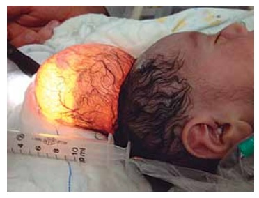
A é bom, pois a malformação se trata de meningocele, sem herniação de tecido cerebral.
B é reservado, pois a malformação compromete a drenagem venosa cerebral.
C depende da presença de outas malformações encefálicas intracranianas.
D é reservado, pois há chance de 90% de evolução para hidrocefalia.
Questão 82 · Pediatria · Inf ecções congênitas · 4000170021O vírus mais relacionado com perdas auditivas congênitas é:
A adenovírus.
B vírus sincicial respiratório.
C citomegalovírus.
D rubéola.
Questão 83 · Glaucoma Congênito Primário · 4000170020Lactente de 1 mês de idade apresenta lacrimejamento e aparente aversão à luz há cerca de 2 semanas. AP: pré-natal sem intercorrências, gestação a termo, parto normal. Exame físico: fecha os olhos com força, principalmente à tentativa d e avaliação dos olhos com uma lanterna, lacrimejamento bilateral, córnea de ambos os olhos com perda de transparência e aspecto azulado. A hipótese diagnóstica é:
A catarata congênita.
B conjuntivite gonocócica.
C toxoplasmose congênita.
D glaucoma congênito.
Questão 84 · Dermatologia · Antihistamínicos · Manif estação Clínica · 4000170019Adolescente de 17 anos apresenta lesões cutâneas há dois dias, conforme a imagem, que aparecem e desapare-cem em um período de 4 a 6 horas, sem outras alterações cutâneas ou sistêmicas. AP: em uso de amoxacilina há 10 dias devido à infecção de orofaringe prescrita para ser mantida por 14 dias. O diagnóstico e a conduta são, respectivamente,

A urticária aguda com angioedema; corticoterapia via oral e manutenção da amoxacilina até completar 14 dias.
B urticária aguda; anti-histamínico via oral e suspensão da amoxacilina.
C urticária crônica; anti-histamínico via oral, corticoterapia via oral e manutenção da amoxacilina até completar 14 dias.
D anafilaxia; adrenalina subcutânea, anti-histamínico via endovenosa, corticoterapia via endovenosa e suspensão da amoxacilina.
Questão 85 · Tetralogia de Fallot · Pediatria · 4000170018Assinale a alternativa que corresponde a uma cardiopatia congênita cianótica com hipofluxo pulmonar.
A Defeito do septo atrial.
B Estenose aórtica valvar.
C Defeito do septo atrioventricular.
D Tetralogia de Fallot.
Questão 86 · Inf ectologia · Parasitoses · 4000170017A eosinofilia no sangue periférico está associada às seguintes parasitoses intestinais:
A Giardia intestinalis e Strongyloides stercoralis.
B Entamoeba histolytica e Enterobius vermicularis.
C Entamoeba histolytica e Giardia intestinalis.
D Strongyloides stercoralis e Enterobius vermicularis.
Questão 87 · Síndrome Inf lamatória Multissistêmica · 4000170016Menino de 8 anos apresenta há 3 dias dor abdominal, em cólica, com piora associada a 2 episódios de diarreia e febre persistente. Hoje, apareceram placas eritematosas em tronco, pescoço e membros, não pruriginosas e evoluiu com queda do estado geral, sonolência e apatia. AP: asmático e teve covid-19 há 1 mês. Exame físico: REG, sonolento, FC 130 bpm, FR 22 irpm, PA 75/40 mmHg, temperatura axilar 38,9 ºC; pulsos nos e tempo de enchimento capilar 4 segundos. Hiperemia ocular. Dor difusa no abdome, sem sinais de reação peritoneal. Exames laboratoriais: linfopenia, trombocitopenia e neutrofilia, VHS e PCR aumentados. A hipótese diagnóstica é:
A dengue.
B síndrome inflamatória multissistêmica associada à covid-19.
C síndrome de ativação macrofágica.
D meningococcemia.
Questão 88 · Diagnóstico · 4000170015Com relação ao diagnóstico de tuberculose em crianças, assinale a alternativa correta.
A A leitura correta da reação de sensibilidade ao teste da tuberculina é realizada somando-se à enduração ao halo inflamatório.
B O estado nutricional é um dos critérios utilizados para o diagnóstico de tuberculose pulmonar em crianças e adolescentes com baciloscopia negativa.
C Em crianças menores de 10 anos, ou que não conseguem escarrar, o lavado gástrico é uma alternativa à baciloscopia e possui elevada sensibilidade (90%).
D No caso de tuberculose latente, pode-se utilizar, além da prova tuberculínica, o método IGRA (
Questão 89 · Programa Nacional de Imunizações · Calendário dos adolescentes · ImunizaçõesVacinação · 4000170014Menino de 12 anos realiza consulta de rotina e está assintomático. AP: suspeita de caxumba aos 11 anos; recebeu últimas vacinas aos 5 anos. Em relação às vacinas, hoje deverá receber
A HPV e meningocócica ACWY.
B HPV, meningocócica C e dT.
C HPV, influenza (disponível neste momento de pandemia covid-19), meningocócica ACWY e dT.
D HPV, influenza (disponível neste momento de pandemia covid-19) e dT.
Questão 90 · Medição da pressão arterial · 4000170013Menina de 6 anos está sentada e tranquila; sua pressão arterial foi aferida por aparelho aneroide com comprimento do manguito de 90% da circunferência do braço cobrindo-o totalmente, o braço direito foi posicionado na altura do coração, com o estetoscópio colocado sob o manguito, insu ado e desinsu ado para a aferição. O valor da pressão arterial obtida pode não ser confiável devido à
A posição sentada da criança.
B escolha de manguito grande para a criança.
C escolha de aparelho inadequado.
D presença do estetoscópio sob o manguito.
Questão 91 · Taquicardia Ventricular TV · 4000170012Lactente de 10 meses apresenta palidez cutânea, taquipneia e taquicardia há 4 horas. Exame físico: FC acima de 150 b p m, afebril, com pulsos nos, perfusão periférica diminuída e tempo de enchimento capilar de 4 segundos. Eletrocardiograma: FC 160 bpm, ausência de ondas P, complexos QRS com duração aumentada (0,16 seg) e monomórficos, conforme imagem. O diagnóstico é taquicardia
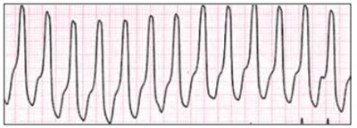
A sinusal.
B atrial não sinusal.
C juncional.
D ventricular.
Questão 92 · Prof ilaxia Ferro · 4000170011A dose pro lática de ferro elementar para lactente em aleitamento materno exclusivo livre demanda, nascido a termo, com peso de nascimento de 2100 g, é
A 1 mg/kg/dia a partir dos 6 meses de vida até os 24 meses de vida.
B 2 mg/kg/dia a partir dos 3 meses de vida até os 24 meses de vida.
C 2 mg/kg/dia a partir de 30 dias de vida por 1 ano e 1 mg/kg/dia por mais 1 ano.
D 2 mg/kg/dia a partir de 3 meses de vida por 1 ano e 1 mg/kg/dia por mais 1 ano.
Questão 93 · Abordagem do RGE Fisiológico · 4000170010Lactente de 4 meses apresenta regurgitações frequentes após as mamadas, além de chorar de 30 a 60 minutos por dia. Está recebendo volume adequado de fórmula láctea. O ganho de peso é adequado e está no percentil 50. A conduta é:
A solicitar um exame contrastado de esôfago-estômago-duodeno para diagnosticar refluxo gastroesofágico.
B solicitar exame de pHmetria esofágica de 24 horas para demonstrar doença do refluxo gastroesofágico.
C recomendar a substituição por fórmula infantil antirregurgitação.
D prescrever medicação para redução da secreção ácida gástrica.
Questão 94 · Classif icação do controle clínico da asma · 4000170009Assinale a alternativa que apresenta o quadro clínico de uma criança com asma parcialmente controlada, de acordo com a Global Iniciative for Asthma
A Tosse seca durante 4 dias na semana, utilizando medicação de resgate 3 vezes na semana, consegue brincar normalmente e dorme a noite toda.
B Cansaço para correr em todas as brincadeiras, utiliza medicação de resgate para tosse todas as vezes que brinca e tosse noturna.
C Uso de medicação de controle (beclometasona), brinca normalmente, dorme a noite toda e apresentou uso de medicação de resgate há 4 meses.
D Uso de medicação de controle, tosse todos os dias, apresenta tosse noturna e faz uso de medicação de resgate a maioria dos dias da semana.
Questão 95 · Tratamento · 4000170008O principal determinante para o sucesso do tratamento de uma criança com anafilaxia é:
A a identificação antecipada do alérgeno.
B a ressuscitação fluídica.
C o uso precoce de adrenalina IM.
D a prescrição imediata de corticoide e anti-histamínico.
Questão 96 · Síndrome de Down · 4000170007Menino de 6 meses com suspeita de síndrome de Down (SD) comparece à consulta com seus pais. Cariótipo: 46,XY t(14,21)(14q;21q), como na imagem. Para a orientação de seus pais, é importante

A realizar o cariótipo dos pais, pois trata-se de translocação Robertsoniana, a qual pode haver herança de um dos pais, evidenciando risco de recorrência da SD em outros filhos, maior do que na população em geral.
B realizar o cariótipo dos pais, pois trata-se de translocação Robertsoniana, sempre decorrente de herança de um dos pais, evidenciando risco de recorrência da SD em outros filhos, de 50% a 100%.
C esclarecer a eles de que não se trata da trissomia livre do cromossomo 21, mas sim de “mosaicismo”, com expressão da SD mais leve.
D realizar novo cariótipo da criança, pois este não se configura com nenhuma das situações nas quais pode ocorrer a SD.
Questão 97 · Amamentação Aleitamento Materno · 4000170006Sobre o aleitamento materno, é correto afirmar que
A as fases do leite materno são duas: o colostro e o leite maduro, sendo que o primeiro contém mais proteínas e menos gorduras do que o leite maduro.
B o leite materno apresenta composição semelhante para todas as mulheres, porém é individualizado para cada mãe e seu bebê.
C o leite do Banco de Leite Humano é pasteurizado e está disponível para todos os bebês cujas mães não conseguem amamentar.
D há a indicação de suspender a amamentação em caso de infecção da mãe pela covid-19.
Questão 98 · Icterícia neonatal · Pediatria · Hiperbilirrubinemia não f isiológica · 4000170005RN de termo, com peso adequado para idade gestacional está em alojamento conjunto e em aleitamento materno exclusivo em livre demanda. Com 10 horas de vida, a mãe se queixa que o RN está mamando pouco e parece “estar com fome”. AP: mãe primigesta, pré natal sem intercorrências. Exame físico: icterícia 3 + em Zona III de Kramer. Exames laboratoriais: tipagem sanguínea materna: O +; tipagem sanguínea do RN: B +; teste de Coombs direto: negativo; bilirrubina indireta: 2,9 mg/dL (sangue do cordão). O diagnóstico mais provável e a conduta correta são:
A icterícia fisiológica agravada pela baixa oferta de leite materno; iniciar fototerapia e reavaliar após 12 horas.
B doença hemolítica por provável incompatibilidade sanguínea; iniciar fototerapia e coletar bilirrubinas, hematócrito, hemoglobina e reticulócitos.
C doença hemolítica por provável incompatibilidade sanguínea; coletar bilirrubinas e preparar exsanguineo transfusão.
D hiperbilirrubinemia própria do RN; monitorizar clinicamente até 48 horas de vida.
Questão 99 · Passos iniciais · Recepção do neonato com boa vitalidade · Hipotermia neonatal · 4000170004Na assistência de sala de parto, atualmente há uma preocupação em relação à normotermia dos recém-nascidos. A temperatura desejada tanto para o recém-nascido quanto para o ambiente na sala de parto são, respectivamente,
A entre 36,5 – 37,5 ºC; entre 23 – 26 ºC.
B entre 35,5 – 36,5 ºC; entre 26 – 28 ºC.
C entre 36,5 – 37,5 ºC; entre 26 – 28 ºC.
D entre 37,5 – 38,5 ºC; entre 23 – 26 ºC.
Questão 100 · Reanimação neonatal em maiores de 34 semanas · 4000170003Gestante de 25 anos não realizou pré-natal, idade gestacional de 38 semanas, feto único, bolsa rota de 36 horas. Na sala de parto, após o nascimento, o RN apresentou hipotonia e choro fraco. A conduta é Respostas: 1 12 23 34 45 56 67 78 89 100
A deixar o RN junto à mãe e avaliar a vitalidade periodicamente.
B estimular o RN e aguardar 1 minuto para clampear o cordão umbilical.
C clampear o cordão umbilical após 3 minutos e realizar os passos iniciais da reanimação.
D clampear imediatamente o cordão umbilical e realizar os passos iniciais da reanimação.